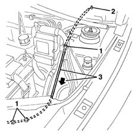

7025A26 bonnet lid opening control - repair
- Path
- Procedures > 70 FITTINGS > 7025 COMPARTMENT LIDS > 7025A bonnet lid > 7025A26 bonnet lid opening control - repair
- Kind
- repair procedure (removal / refitting; the operation number is the code)
- Applies to
- all engines; all production periods
- Interactive page
- https://sloeber94.github.io/elrnDB-lYpsln/en/#/2429545
Applies to: all engines; all production periods
 Removing
Removing
 Refitting
Refitting7025A34 bonnet lid lock (one) - r+r or repair
7025A24 boot lid opening lever - r+r
5505A13 supplementary junction control unit in engine bay - r r
1. Release the control cable retaining bands.
2. Connect a probe to the inner end of the control cable. This operation is necessary to make it easier to refit the control cable.
3. Release the cable from the engine compartment side leaving the sensor in its place.

Applies to: all engines; all production periods
Refitting
RemovingCheck that the control cable is undamaged.
Refit the control cable inserting it in the engine compartment and using the sensor.
Remove the sensor from the inner end of the cable.
Reposition the retaining bands.
5505A13 supplementary junction control unit in engine bay - r r
7025A24 boot lid opening lever - r+r
7025A34 bonnet lid lock (one) - r+r or repair
Check that the bonnet lid opens and closes properly.